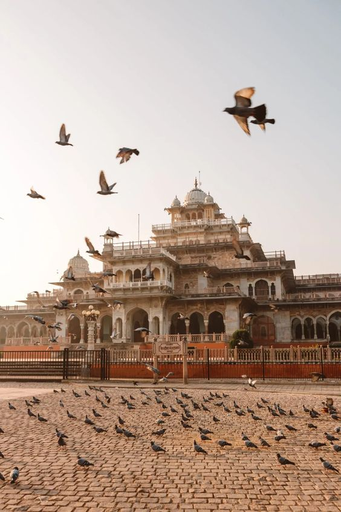
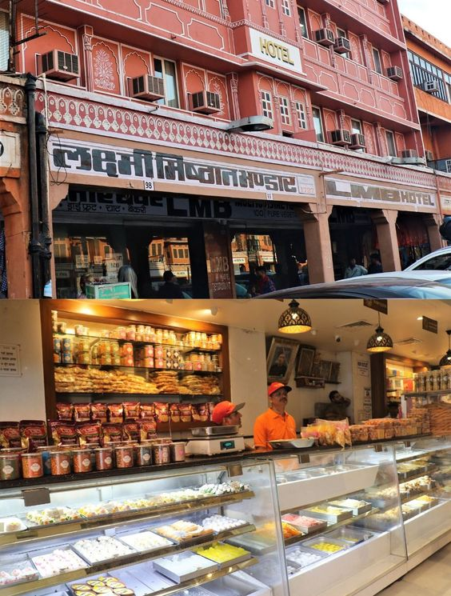
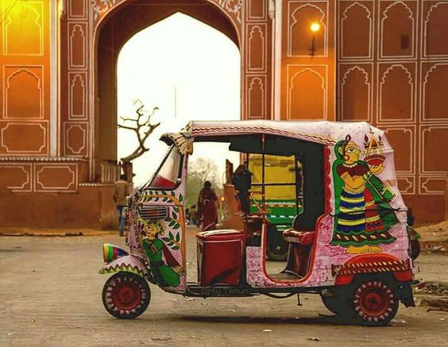

Tourist Locations in Jaipur
Jaipur, the Pink City, is known for its rich history and stunning architecture. Some must-visit tourist locations include:
- Jaigarh Fort
Known for its massive cannon, Jaigarh Fort offers spectacular views of the Aravalli hills and the surrounding landscape.
- Hawamahal
- City Palace
A magnificent complex that houses museums, courtyards, and gardens, showcasing the grandeur of Rajput architecture and culture.
- Nahargarh Fort
Situated on the edge of the Aravalli hills, Nahargarh Fort offers panoramic views of the city and is a popular spot for sunset views.
Hawa Mahal (Palace of Winds): A stunning five-story palace with intricate latticework windows, offering a glimpse into the royal past of Jaipur. .
Eating Spots
Experience the vibrant flavors of Jaipur at these popular eating spots:
- Chokhi Dhani
Chokhi Dhani is a traditional Rajasthani village-themed resort located on the outskirts of Jaipur. It offers an authentic Rajasthani cultural experience with folk music, dance performances, camel rides, puppet shows, and traditional Rajasthani cuisine.
- Laxmi Mishthan Bhandar (LMB)
Laxmi Mishthan Bhandar, commonly known as LMB, is one of Jaipur's oldest and most famous sweet shops and restaurants. It is renowned for its delicious traditional Rajasthani sweets, snacks, and vegetarian dishes.
- Masala Chowk
Masala Chowk is a food court in Jaipur that offers a wide variety of street food and local delicacies from different parts of Rajasthan. It's a popular spot for food enthusiasts to enjoy authentic Rajasthani street food in a clean and hygienic environment.
- Tapri - The Tea House
Tapri is a trendy tea house in Jaipur known for its innovative tea blends, refreshing beverages, and delicious snacks. It offers a cozy ambiance with indoor and outdoor seating options, making it a popular hangout spot for locals and tourists alike.
- Jal Mahal Ice Cream Parlor
Jal Mahal Ice Cream Parlor is a popular ice cream parlor located near the iconic Jal Mahal (Water Palace) in Jaipur. It offers a variety of delicious ice cream flavors and desserts, making it a perfect place to cool off and indulge in sweet treats while exploring the city.
Transport Facilities
Getting around Jaipur is convenient with various transport options:
- Jaipur Metro
Jaipur Metro is a rapid transit system serving the city of Jaipur. It currently consists of one operational line (Pink Line) with nine stations. The metro provides a fast and convenient mode of transportation for commuters and tourists, connecting key areas of the city.
- Auto-rickshaw
Auto rickshaws, commonly known as "autos," are a popular mode of transport in Jaipur for short distances. They are three-wheeled vehicles with a seating capacity of up to three passengers. Auto rickshaws are known for their affordability and flexibility, making them ideal for navigating through the city's narrow lanes and bustling streets.
- City Buses
Jaipur city buses are operated by the Jaipur City Transport Services Limited (JCTSL) and provide an extensive network of routes covering various parts of the city. Buses are an economical and reliable mode of transport for traveling longer distances within Jaipur. They offer a comfortable ride with air-conditioned and non-air-conditioned options available.
- Taxi
Taxis are widely available in Jaipur and offer a convenient door-to-door transport option for travelers. Both app-based and street-hailed taxis are available, providing flexibility and ease of booking. Taxis are suitable for individuals or groups looking for a more private and comfortable travel experience.
- Rental Buses
Rental cars are another popular option for exploring Jaipur and its surrounding areas at your own pace. Several car rental agencies operate in the city, offering a variety of vehicles ranging from compact cars to SUVs and luxury cars. Renting a car provides travelers with the freedom to plan their own itinerary and visit attractions off the beaten path.